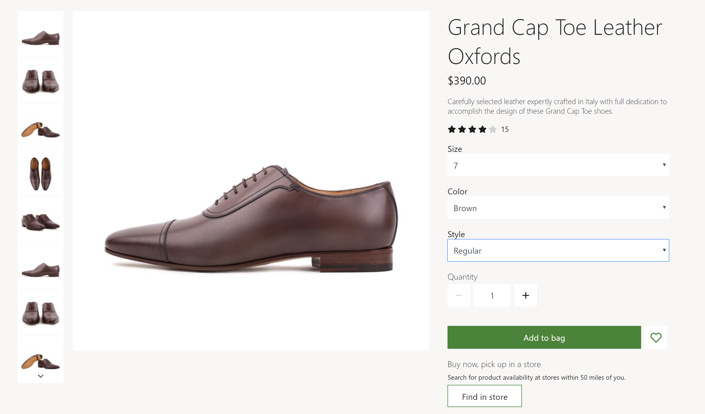
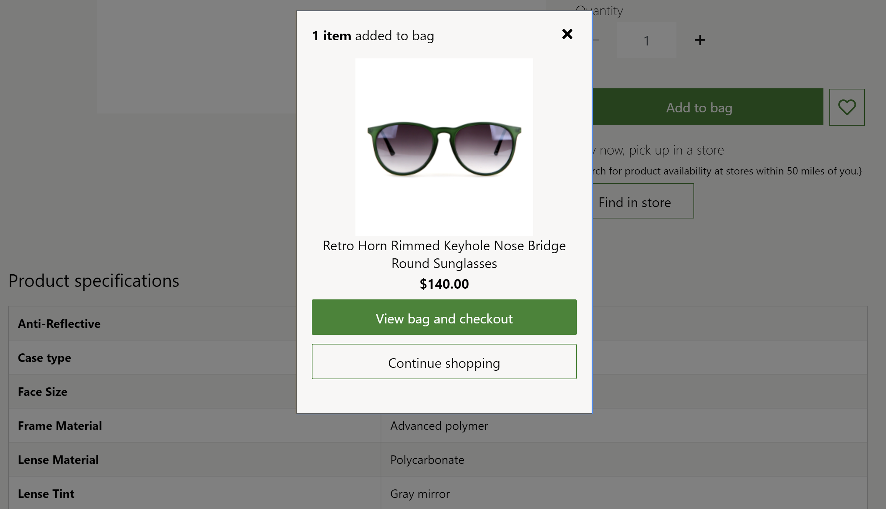

Buy box module
This topic covers buy box modules and describes how to add them to site pages in Microsoft Dynamics 365 Commerce.
Overview
The term buy box typically refers to the area of a product details page that is "above the fold," and that hosts all the most important information that is required to make a product purchase. (An area that is "above the fold" is visible when the page is first loaded, so that users don't have to scroll down to see it.)
A buy box module is special container that is used to host all the modules that are shown in the buy box area of a product details page.
The URL of a product details page includes the product ID. All the information that is required to render a buy box module is derived from this product ID. If a product ID isn't provided, the buy box module won't be rendered correctly on a page. Therefore, a buy box module can be used only on pages that have product context. To use it on a page that doesn't have product context (for example, a home page or a marketing page), you must do additional customizations.
The following image shows an example of a buy box module on a product details page.

Buy box module properties and slots
On a product details page, a buy box is divided into two regions: a media region on the left and a content region on the right. By default, the ratio of the width of the media region column to the width of the content region column is 2:1. On mobile devices, the two regions are stacked so that one region appears below the other region. Themes can be used to customize the column widths and stacking rank.
A buy box module renders the title, description, price, and ratings of a product. It also lets customers select product variants that have different product attributes, such as size, style, and color. When a product variant is selected, other properties in the buy box (for example, the product description and images) are updated to reflect the variant information.
A quantity selector is provided, so that customers can specify the quantity of items to purchase. The maximum quantity that can be purchased can be defined in the site settings.
From the buy box, customers can also perform actions such as adding a product to the cart, adding a product to their wishlist, and selecting a pickup location. These actions can be performed on a product or a product variant. To add a product to a wishlist, the customer must be signed in.
Themes can be used to remove or change the order of buy box product properties and action controls.
Module properties
Heading tag – This property defines the heading tag for the product title. If the buy box is at the top of the page, this property should be set to h1 to meet accessibility standards.
Enable "shop similar looks" recommendations - This property allows the buy box to show links to products that look similar to the currently viewed item. This feature is available in Commerce release 10.0.13 and later.
Modules that can be used in a buy box module
- Media gallery – This module is used to showcase images of a product on a product details page. For more information about this module, see Media gallery module.
- Store selector – This module shows a list of nearby stores where an item is available for pickup. It lets users enter a location to find stores that are nearby. For more information about this module, see Store selector module.
- Social share - This module can be added to the buy box to allow users to share product information on social media. For more information, see Social share module.
Buy box module settings
The following buy box module settings can be configured at Site Settings > Extensions:
- Cart line quantity limit – This property is used to specify the maximum number of each item that can be added to the cart. For example, a retailer might decide that only 10 of each product can be sold in a single transaction.
- Inventory – For information about how to apply inventory settings, see Apply inventory settings.
- Add product to cart - This property is used to specify the behavior after an item is added to the cart. The possible values are Navigate to cart page, Do not navigate to cart page, and Show notification. When the value is set to Navigate to cart page, users are sent to the cart page after they add an item. When the value is set to Do not navigate to cart page, users aren't sent to the cart page after they add an item. When the value is set to Show notification, users are shown a confirmation notification and can continue to browse on the product details page.
Important
The Add product to cart site settings are available in the Dynamics 365 Commerce 10.0.11 release. If you are updating from an older version of Dynamics 365 Commerce, you must manually update the appsettings.json file. For instructions on updating the appsettings.json file, see SDK and module library updates (This is an external linThis link was changed due to HTMLfromRepoGenerator).
The following image shows an example of an "added to cart" confirmation notification on the Fabrikam site.

Commerce Scale Unit interaction
The buy box module retrieves product information by using Commerce Scale Unit application programming interfaces (APIs). The product ID from the product details page is used to retrieve all information.
Add a buy box module to a page
To add a buy box module to a new page and set the required properties, follow these steps.
- Go to Fragments, and select New to create a new fragment.
- In the New fragment dialog box, select the Buy box module.
- Under Fragment name, enter the name Buy box fragment, and then select OK.
- In the Media Gallery slot of the buy box module, select the ellipsis (...), and then select Add Module.
- In the Add Module dialog box, select the Media gallery module, and then select OK.
- In the Store selector slot of the buy box module, select the ellipsis (...), and then select Add Module.
- In the Add Module dialog box, select the Store selector module, and then select OK.
- Select Save, select Finish editing to check in the fragment, and then select Publish to publish it.
- Go to Templates, and select New to create a new template.
- In the New Template dialog box, under Template name, enter PDP template, and then select OK.
- In the Body slot, select the ellipsis (...), and then select Add Module.
- In the Add Module dialog box, select the Default Page module, and then select OK.
- In the Main slot of the default page, select the ellipsis (...), and then select Add fragment.
- In the Select fragment dialog box, select the Buy box fragment fragment that you created earlier, and then select OK.
- Select Save, select Finish editing to check in the template, and then select Publish to publish it.
- Go to Pages, and select New to create a new page.
- In the Choose a template dialog box, select the PDP template template. Under Page name, enter PDP page, and then select OK.
- In the Main slot of the new page, select the ellipsis (...), and then select Add fragment.
- In the Select fragment dialog box, select the Buy box fragment fragment that you created earlier, and then select OK.
- Save and preview the page. Add the ?productid=<product id> query string parameter to the URL of the preview page. In that way, the product context is used to load and render the preview page.
- Select Save, select Finish editing to check in the page, and then select Publish to publish it. A buy box should appear on the product details page.